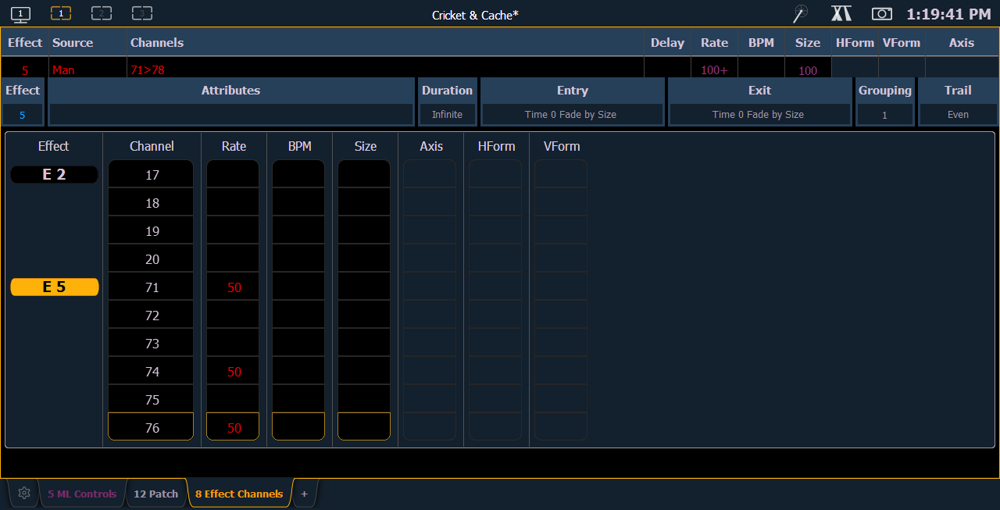

In the Effect Channels Display, you can override certain effect properties per channel at the cue level. To open this display, press [Shift] + [Effect], [Tab] [8], or select the effect channel icon from the display management home screen.

The following properties can be overridden:
Note: To add a channel level override, first you will need to be in the Effect Channel display with the effect running.
[2][6]<Effect><1>{Rate}[6][Enter] - to change the rate for just channel 26. With the effect running, the console will default to the running effect number. You may need to select the effect first ([Effect] [n] [Enter]). This will open the effect status display, and you will have access to the effect softkeys.
In the effect status display, an “+” will display by any effect property that has a channel level override.
You can then store these channel overrides in a cue by using [Record] or [Update].